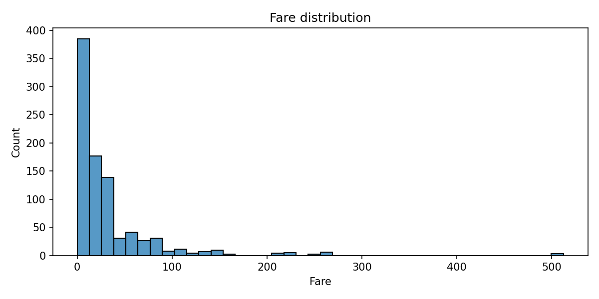
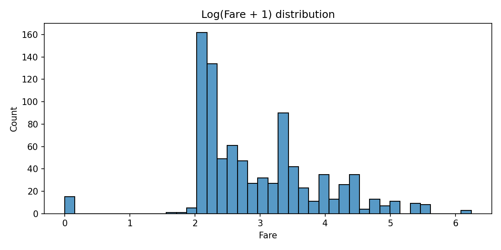
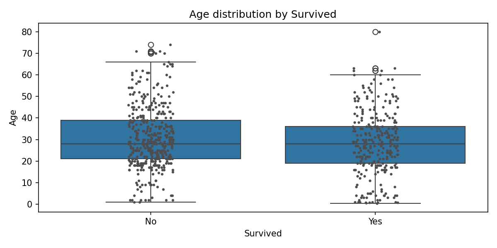
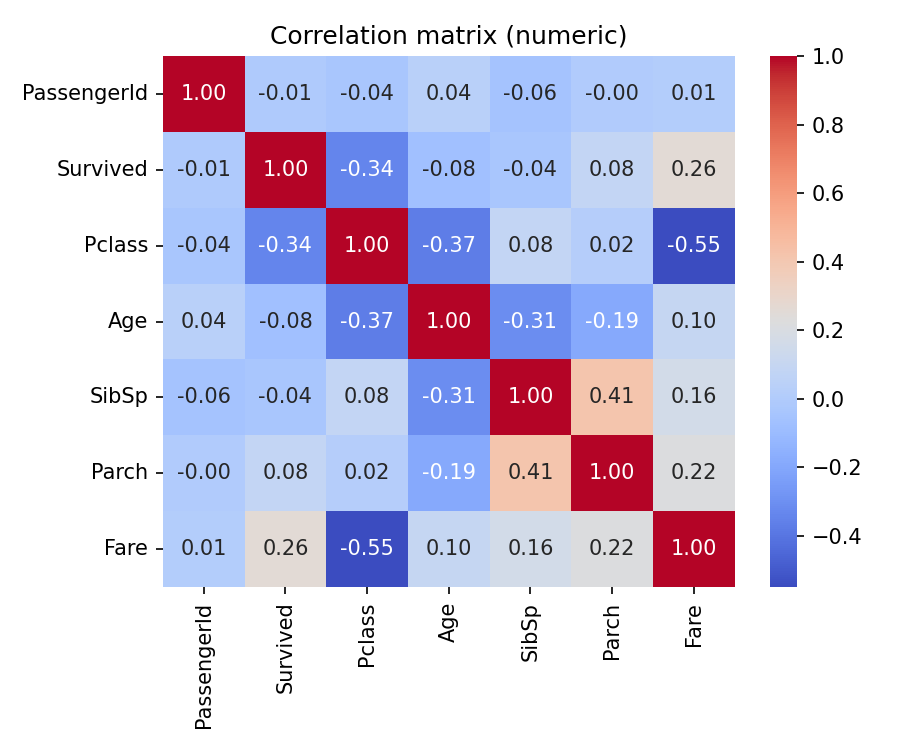
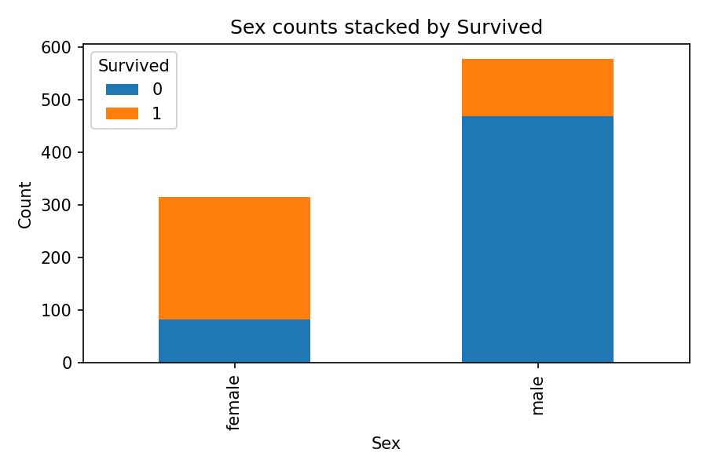
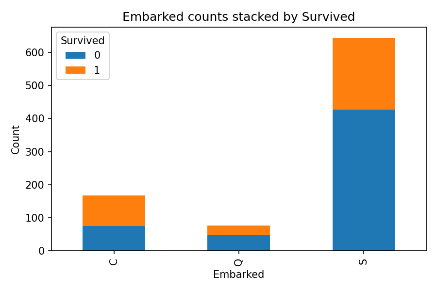

Fare distribution: Right-skewed with many low fares and a long tail of high fares (see log version below).

Log(Fare + 1): Log-transformed fare shows a more symmetric distribution useful for modeling.

Age by Survived: Survivors appear slightly younger on average; Age has moderate spread and some outliers.

Correlation matrix: Pclass and Fare are moderately correlated; family-size components (SibSp/Parch) correlate with each other; Pclass and Fare relate to Survival.
Categorical Plots

Sex by Survived: Females have a noticeably higher survival rate than males (visual stacked counts).

Embarked by Survived: Survival varies by embarkation port; consider encoding Embarked as a categorical feature.